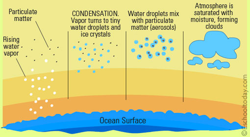

Water vapor in the air gets cold and changes back into liquid, forming clouds. This is called condensation.
You can see the same sort of thing at home... Pour a glass of cold water on a hot day and watch what happens.
Water forms on the outside of the glass. That water didn't somehow leak through the glass!
It actually came from the air. Water vapor in the warm air, turns back into liquid when it touches the cold glass.

Condensation is the process in which water vapor in the air is changed into liquid water.
Condensation is crucial to the water cycle because it is responsible for the formation of clouds.
These clouds may produce precipitation, which is the primary route for water to return to the Earth's surface within the water cycle.
Condensation is the opposite of evaporation.